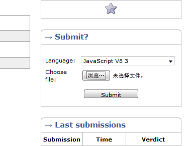
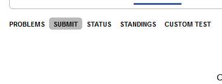
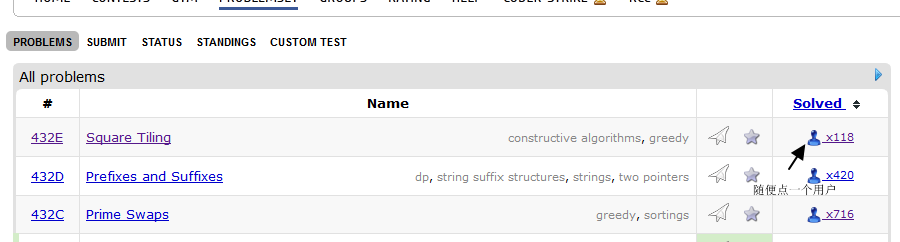
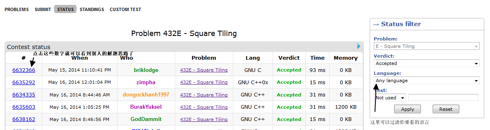

<!DOCTYPE html>
<html>
<head><meta name="generator" content="Hexo 3.8.0">
  <meta charset="utf-8">
  
  <title>JavaScript 也来挑战ACM | youxiachai</title>
  <meta name="viewport" content="width=device-width, initial-scale=1, maximum-scale=1">
  <meta name="description" content="前言作为一个ACM票友,最近,在微博上看到,有人说现在有支持JS的OJ平台,于是,花了一点时间摸索了一下,为了让更多的js程序员也入坑,于是写一篇快速入门的攻略,让各位用js在ACM圈子里面打出一番天地…..">
<meta name="keywords" content="node">
<meta property="og:type" content="article">
<meta property="og:title" content="JavaScript 也来挑战ACM">
<meta property="og:url" content="http://blog.gfdsa.net/2014/05/18/nodejs/jsforoj/index.html">
<meta property="og:site_name" content="youxiachai">
<meta property="og:description" content="前言作为一个ACM票友,最近,在微博上看到,有人说现在有支持JS的OJ平台,于是,花了一点时间摸索了一下,为了让更多的js程序员也入坑,于是写一篇快速入门的攻略,让各位用js在ACM圈子里面打出一番天地…..">
<meta property="og:locale" content="zh-CN">
<meta property="og:image" content="http://blog.gfdsa.net/2014/05/18/nodejs/jsforoj/codeforce_1.png">
<meta property="og:image" content="http://blog.gfdsa.net/2014/05/18/nodejs/jsforoj/codeforce_2.png">
<meta property="og:image" content="http://blog.gfdsa.net/2014/05/18/nodejs/jsforoj/codeforce_3.png">
<meta property="og:image" content="http://blog.gfdsa.net/2014/05/18/nodejs/jsforoj/codeforce_4.png">
<meta property="og:updated_time" content="2019-05-11T17:21:27.358Z">
<meta name="twitter:card" content="summary">
<meta name="twitter:title" content="JavaScript 也来挑战ACM">
<meta name="twitter:description" content="前言作为一个ACM票友,最近,在微博上看到,有人说现在有支持JS的OJ平台,于是,花了一点时间摸索了一下,为了让更多的js程序员也入坑,于是写一篇快速入门的攻略,让各位用js在ACM圈子里面打出一番天地…..">
<meta name="twitter:image" content="http://blog.gfdsa.net/2014/05/18/nodejs/jsforoj/codeforce_1.png">
  
    <link rel="alternative" href="/atom.xml" title="youxiachai" type="application/atom+xml">
  
  
    <link rel="icon" href="/favicon.png">
  
  <link rel="stylesheet" href="/css/style.css">
  
<!-- Google Analytics -->
<script type="text/javascript">
(function(i,s,o,g,r,a,m){i['GoogleAnalyticsObject']=r;i[r]=i[r]||function(){
(i[r].q=i[r].q||[]).push(arguments)},i[r].l=1*new Date();a=s.createElement(o),
m=s.getElementsByTagName(o)[0];a.async=1;a.src=g;m.parentNode.insertBefore(a,m)
})(window,document,'script','//www.google-analytics.com/analytics.js','ga');

ga('create', 'UA-31013178-1', 'auto');
ga('send', 'pageview');

</script>
<!-- End Google Analytics -->


   
<script>
var _hmt = _hmt || [];
(function() {
  var hm = document.createElement("script");
  hm.src = "//hm.baidu.com/hm.js?75f5de70aa60d9d2b194636cd8b7b621";
  var s = document.getElementsByTagName("script")[0]; 
  s.parentNode.insertBefore(hm, s);
})();
</script>

  <script src="http://libs.baidu.com/jquery/1.9.0/jquery.js"></script>
</head></html>
<body>
  <div id="container">
    <div class="left-col">
    <div class="overlay"></div>
<div class="intrude-less">
	<header id="header" class="inner">
		<div class="profilepic">
			
		</div>

		<hgroup>
		  <h1 class="header-author"><a href="/">youxiachai</a></h1>
		</hgroup>

		
		<p class="header-subtitle">一个在IT业界打杂的程序猿</p>
		

		
			<div class="switch-btn">
				<div class="icon">
					<div class="icon-ctn">
						<div class="icon-wrap icon-house" data-idx="0">
							<div class="birdhouse"></div>
							<div class="birdhouse_holes"></div>
						</div>
						<div class="icon-wrap icon-ribbon hide" data-idx="1">
							<div class="ribbon"></div>
						</div>
						
						
						<div class="icon-wrap icon-me hide" data-idx="3">
							<div class="user"></div>
							<div class="shoulder"></div>
						</div>
						
					</div>
					
				</div>
				<div class="tips-box hide">
					<div class="tips-arrow"></div>
					<ul class="tips-inner">
						<li>菜单</li>
						<li>标签</li>
						
						
						<li>关于我</li>
						
					</ul>
				</div>
			</div>
		

		<div class="switch-area">
			<div class="switch-wrap">
				<section class="switch-part switch-part1">
					<nav class="header-menu">
						<ul>
						
							<li><a href="/">主页</a></li>
				        
							<li><a href="/archives">所有文章</a></li>
				        
						</ul>
					</nav>
					<nav class="header-nav">
						<div class="social">
							
								<a class="github" target="_blank" href="https://github.com/youxiachai" title="github">github</a>
					        
								<a class="weibo" target="_blank" href="http://weibo.com/youxiachai/" title="weibo">weibo</a>
					        
								<a class="facebook" target="_blank" href="https://www.facebook.com/youxilua" title="facebook">facebook</a>
					        
								<a class="google" target="_blank" href="https://plus.google.com/u/0/+%E4%B8%8E%E9%82%BB%E5%BA%84/about/op/svuwn" title="google">google</a>
					        
								<a class="twitter" target="_blank" href="https://twitter.com/Tom_achai" title="twitter">twitter</a>
					        
						</div>
					</nav>
				</section>
				
				
				<section class="switch-part switch-part2">
					<div class="widget tagcloud">
						<a href="/tags/MQTT/" style="font-size: 10px;">MQTT</a> <a href="/tags/android/" style="font-size: 18.57px;">android</a> <a href="/tags/angular/" style="font-size: 10px;">angular</a> <a href="/tags/appframework/" style="font-size: 10px;">appframework</a> <a href="/tags/docker/" style="font-size: 10px;">docker</a> <a href="/tags/game/" style="font-size: 11.43px;">game</a> <a href="/tags/hexo/" style="font-size: 11.43px;">hexo</a> <a href="/tags/html5/" style="font-size: 11.43px;">html5</a> <a href="/tags/http/" style="font-size: 10px;">http</a> <a href="/tags/iOS/" style="font-size: 12.86px;">iOS</a> <a href="/tags/java/" style="font-size: 10px;">java</a> <a href="/tags/kindle/" style="font-size: 10px;">kindle</a> <a href="/tags/kotlin/" style="font-size: 10px;">kotlin</a> <a href="/tags/life/" style="font-size: 11.43px;">life</a> <a href="/tags/mac/" style="font-size: 10px;">mac</a> <a href="/tags/math/" style="font-size: 10px;">math</a> <a href="/tags/node/" style="font-size: 20px;">node</a> <a href="/tags/nodejs/" style="font-size: 10px;">nodejs</a> <a href="/tags/phonegap/" style="font-size: 10px;">phonegap</a> <a href="/tags/pi/" style="font-size: 10px;">pi</a> <a href="/tags/pomelo/" style="font-size: 15.71px;">pomelo</a> <a href="/tags/sequelize/" style="font-size: 10px;">sequelize</a> <a href="/tags/summary/" style="font-size: 14.29px;">summary</a> <a href="/tags/unity3d/" style="font-size: 12.86px;">unity3d</a> <a href="/tags/weekly/" style="font-size: 17.14px;">weekly</a> <a href="/tags/社科人文/" style="font-size: 10px;">社科人文</a>
					</div>
				</section>
				
				
				

				
				
				<section class="switch-part switch-part3">
				
					我是谁，我从哪里来，我到哪里去？我就是我，是颜色不一样的吃货…
				</section>
				
			</div>
		</div>
	</header>				
</div>
    </div>
    <div class="mid-col">
      <nav id="mobile-nav">
  	<div class="overlay"></div>
	<div class="intrude-less">
		<header id="header" class="inner">
			<div class="profilepic">
				
			</div>

			<hgroup>
			  <h1 class="header-author"><a href="/">youxiachai</a></h1>
			</hgroup>
			
			<p class="header-subtitle">一个在IT业界打杂的程序猿</p>
			
			<nav class="header-menu">
				<ul>
				
					<li><a href="/">主页</a></li>
		        
					<li><a href="/archives">所有文章</a></li>
		        
		        <div class="clearfix"></div>
				</ul>
			</nav>
			<nav class="header-nav">
				<div class="social">
					
						<a class="github" target="_blank" href="https://github.com/youxiachai" title="github">github</a>
			        
						<a class="weibo" target="_blank" href="http://weibo.com/youxiachai/" title="weibo">weibo</a>
			        
						<a class="facebook" target="_blank" href="https://www.facebook.com/youxilua" title="facebook">facebook</a>
			        
						<a class="google" target="_blank" href="https://plus.google.com/u/0/+%E4%B8%8E%E9%82%BB%E5%BA%84/about/op/svuwn" title="google">google</a>
			        
						<a class="twitter" target="_blank" href="https://twitter.com/Tom_achai" title="twitter">twitter</a>
			        
				</div>
			</nav>
		</header>				
	</div>
</nav>
      <article id="post-nodejs/jsforoj" class="article article-type-post" itemscope itemprop="blogPost">
  
    <div class="article-meta">
      <a href="/2014/05/18/nodejs/jsforoj/" class="article-date">
  	<time datetime="2014-05-17T16:00:00.000Z" itemprop="datePublished">5月 18 2014</time>
</a>
      
      
  <ul class="article-tag-list"><li class="article-tag-list-item"><a class="article-tag-list-link" href="/tags/node/">node</a></li></ul>

    </div>
  
  <div class="article-inner">
    
      <input type="hidden" class="isFancy">
    
    
      <header class="article-header">
        
  
    <h1 class="article-title" itemprop="name">
      JavaScript 也来挑战ACM
    </h1>
  

      </header>
    
    <div class="article-entry" itemprop="articleBody">
      
        <h2 id="前言"><a href="#前言" class="headerlink" title="前言"></a>前言</h2><p>作为一个ACM票友,最近,在微博上看到,有人说现在有支持JS的OJ平台,于是,花了一点时间摸索了一下,为了让更多的js程序员也入坑,于是写一篇快速入门的攻略,让各位用js在ACM圈子里面打出一番天地…..</p>
<a id="more"></a>
<h2 id="支持JS的OJ网站"><a href="#支持JS的OJ网站" class="headerlink" title="支持JS的OJ网站"></a>支持JS的OJ网站</h2><p>据我所知,目前有两个OJ平台支持用js 做题</p>
<ol>
<li><a href="http://judge.u-aizu.ac.jp/onlinejudge/index.jsp" target="_blank" rel="noopener">http://judge.u-aizu.ac.jp/onlinejudge/index.jsp</a></li>
<li><a href="http://codeforces.com/" target="_blank" rel="noopener">http://codeforces.com/</a></li>
</ol>
<p>第一个是日本的OJ平台,是后来有人介绍给我的,我没有怎么认真去看,所以,本篇博文,讲的是如何在第二个毛子的OJ平台用js做题.</p>
<h2 id="用JS做题"><a href="#用JS做题" class="headerlink" title="用JS做题"></a>用JS做题</h2><p>注册账号什么..看得懂英文的应该都没什么问题,所以,现在让我们直接去做题吧!</p>
<p>找一个水题测试一下,怎么用js来写输入输出</p>
<p><a href="http://codeforces.com/problemset/problem/1/A" target="_blank" rel="noopener">http://codeforces.com/problemset/problem/1/A</a></p>
<figure class="highlight js"><table><tr><td class="gutter"><pre><span class="line">1</span><br><span class="line">2</span><br><span class="line">3</span><br><span class="line">4</span><br><span class="line">5</span><br><span class="line">6</span><br><span class="line">7</span><br><span class="line">8</span><br><span class="line">9</span><br><span class="line">10</span><br><span class="line">11</span><br><span class="line">12</span><br><span class="line">13</span><br><span class="line">14</span><br><span class="line">15</span><br><span class="line">16</span><br></pre></td><td class="code"><pre><span class="line"><span class="function"><span class="keyword">function</span> <span class="title">main</span>(<span class="params"></span>) </span>&#123;</span><br><span class="line"></span><br><span class="line">    <span class="keyword">var</span> numbers = readline().split(<span class="string">' '</span>);</span><br><span class="line"></span><br><span class="line">    <span class="keyword">var</span> one = numbers[<span class="number">0</span>];</span><br><span class="line"></span><br><span class="line">    <span class="keyword">var</span> two = numbers[<span class="number">1</span>];</span><br><span class="line"></span><br><span class="line">    <span class="keyword">var</span> three = numbers[<span class="number">2</span>];</span><br><span class="line"></span><br><span class="line"></span><br><span class="line"></span><br><span class="line">    print(<span class="built_in">Math</span>.ceil(one / three) * <span class="built_in">Math</span>.ceil(two / three));</span><br><span class="line">&#125;</span><br><span class="line"></span><br><span class="line">main();</span><br></pre></td></tr></table></figure>
<p>在codeforces, 跑js直接用的是v8, 所有输入流用的是<code>readline()</code>,输出用<code>print()</code> 习惯的话,比用node的简单不少.</p>
<h2 id="本地测试"><a href="#本地测试" class="headerlink" title="本地测试"></a>本地测试</h2><p>我们写好的js文件,用node来跑肯定不行,在windows平台下,codeforces已经编译好二进制包给我们了,我们只要下载,安装就行</p>
<p><a href="http://assets.codeforces.com/files/v8-3.32.0.7z" target="_blank" rel="noopener">http://assets.codeforces.com/files/v8-3.32.0.7z</a></p>
<p>对于linux和mac的平台,你们得自己去编译个v8了.接下来以windows平台本地运行为例.</p>
<p>下载好了,我们windows下的运行环境二进制包以后,要运行刚才写的代码我们只需要</p>
<figure class="highlight plain"><table><tr><td class="gutter"><pre><span class="line">1</span><br></pre></td><td class="code"><pre><span class="line">d8 1a.js</span><br></pre></td></tr></table></figure>
<p>简单测试一下,输入,输出,感觉没问题了,我们就开始提交答案吧.</p>
<h2 id="提交答案"><a href="#提交答案" class="headerlink" title="提交答案"></a>提交答案</h2><p>在问题的右边有个上传文件的框.你直接把js文件上传上去就行了.</p>
<p></p>
<p>那么有没有在线写的呢?答案是有的,就在<strong>sumbit</strong> 这个tab上</p>
<p></p>
<p>接下来等结果就好了.</p>
<h2 id="看别人的解决思路"><a href="#看别人的解决思路" class="headerlink" title="看别人的解决思路"></a>看别人的解决思路</h2><p>对于一个ACM的票友而言..最痛苦的莫过于,想了半天都搞不懂,想看答案学习一下,但是Oj平台又不让看别人的提交的答案,不过codeforces 没这个限制,所有答案都是公开的.</p>
<p></p>
<p>在接下来的页面,我们可以看到各种语言对于这道题的状态,点击最左边的数字可以看到别人的解题思路代码,右边有个过滤条件tab,可以根据自己需要进行过滤</p>
<p></p>
<h2 id="性能"><a href="#性能" class="headerlink" title="性能"></a>性能</h2><p>对于js 在做题的时候,性能如何? 官方有个benchmark</p>
<p><a href="http://codeforces.com/blog/entry/10024" target="_blank" rel="noopener">http://codeforces.com/blog/entry/10024</a></p>
<p>就性能而言,肯定没法跟c比,不过,作为ACM业余票友而言(专业的肯定不会用js来写了..),这个性能足以去做不少题了.吐槽一下..ruby 真慢..</p>

      
    </div>
  </div>
  
    
<nav id="article-nav">
  
    <a href="/2014/06/02/html5/angularexam/" id="article-nav-newer" class="article-nav-link-wrap">
      <strong class="article-nav-caption">&lt;</strong>
      <div class="article-nav-title">
        
          Angularjs 学习总结
        
      </div>
    </a>
  
  
    <a href="/2014/05/11/nodejs/swaggerapi/" id="article-nav-older" class="article-nav-link-wrap">
      <div class="article-nav-title">时髦的API文档生成方式</div>
      <strong class="article-nav-caption">&gt;</strong>
    </a>
  
</nav>

  
</article>


<div class="share">
	<!-- JiaThis Button BEGIN -->
	<div class="jiathis_style">
		<span class="jiathis_txt">分享到：</span>
		<a class="jiathis_button_tsina"></a>
		<a class="jiathis_button_cqq"></a>
		<a class="jiathis_button_douban"></a>
		<a class="jiathis_button_weixin"></a>
		<a class="jiathis_button_tumblr"></a>
		<a href="http://www.jiathis.com/share" class="jiathis jiathis_txt jtico jtico_jiathis" target="_blank"></a>
	</div>
	<script type="text/javascript" src="http://v3.jiathis.com/code/jia.js?uid=1567310" charset="utf-8"></script>
	<!-- JiaThis Button END -->
</div>


<div class="duoshuo">
	<!-- 多说评论框 start -->
	<div class="ds-thread" data-thread-key="nodejs/jsforoj" data-title="JavaScript 也来挑战ACM" data-url="http://blog.gfdsa.net/2014/05/18/nodejs/jsforoj/"></div>
	<!-- 多说评论框 end -->
	<!-- 多说公共JS代码 start (一个网页只需插入一次) -->
	<script type="text/javascript">
	var duoshuoQuery = {short_name:"youxiachai"};
	(function() {
		var ds = document.createElement('script');
		ds.type = 'text/javascript';ds.async = true;
		ds.src = (document.location.protocol == 'https:' ? 'https:' : 'http:') + '//static.duoshuo.com/embed.js';
		ds.charset = 'UTF-8';
		(document.getElementsByTagName('head')[0] 
		 || document.getElementsByTagName('body')[0]).appendChild(ds);
	})();
	</script>
	<!-- 多说公共JS代码 end -->
</div>


      <footer id="footer">
  <div class="outer">
    <div id="footer-info">
    	<div class="footer-left">
    		&copy; 2019 youxiachai
    	</div>
      	<div class="footer-right">
      		<a href="http://hexo.io/" target="_blank">Hexo</a>  Theme <a href="https://github.com/litten/hexo-theme-yilia" target="_blank">Yilia</a> by Litten
      	</div>
    </div>
  </div>
</footer>
    </div>
    
  <link rel="stylesheet" href="/fancybox/jquery.fancybox.css">
  <script src="/fancybox/jquery.fancybox.pack.js"></script>
  <script src="/js/main.js"></script>

  </div>
</body>
</html>